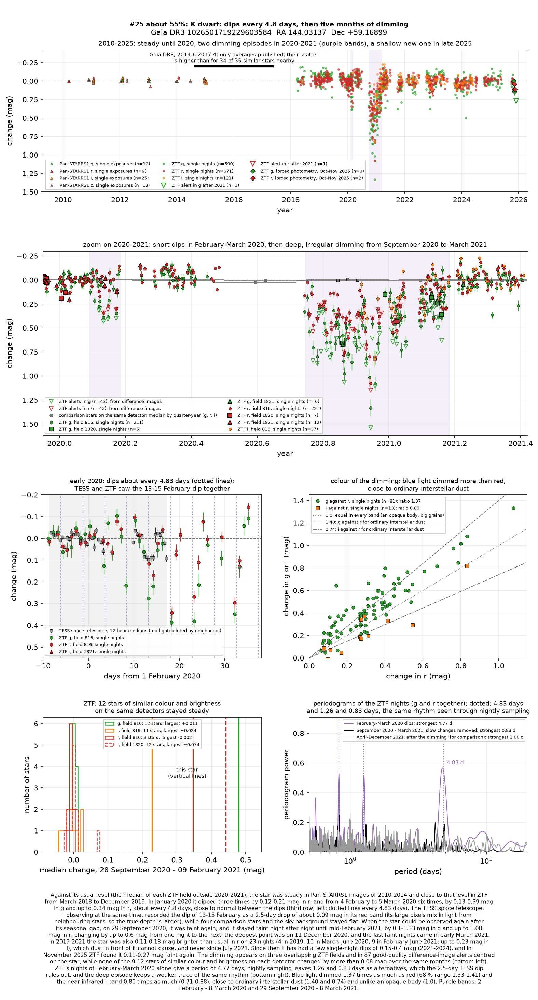
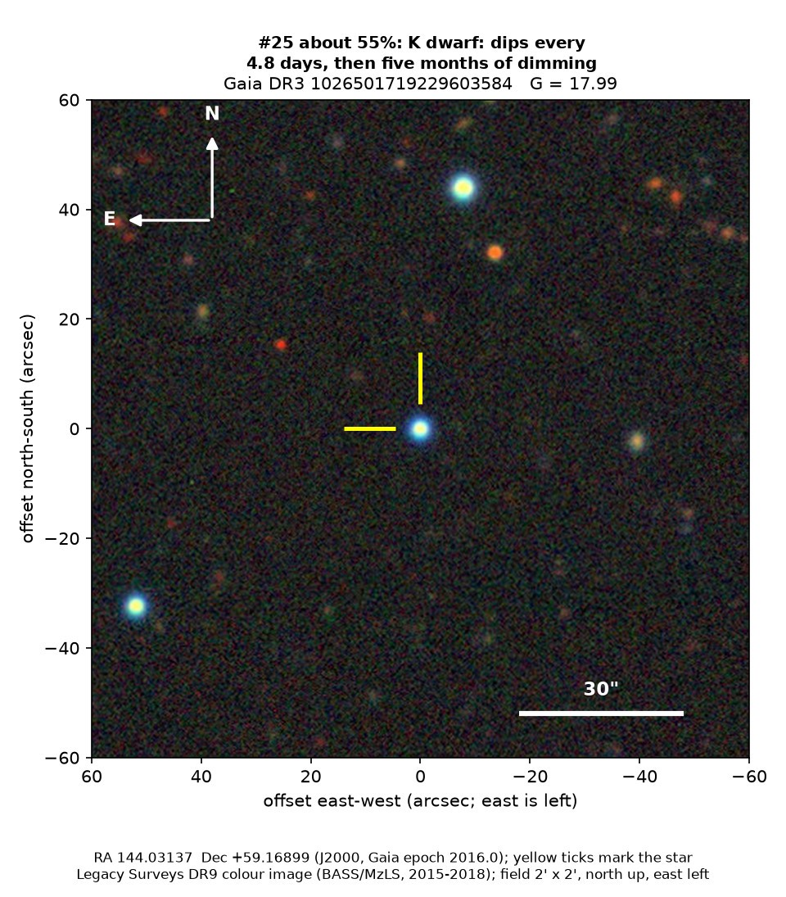
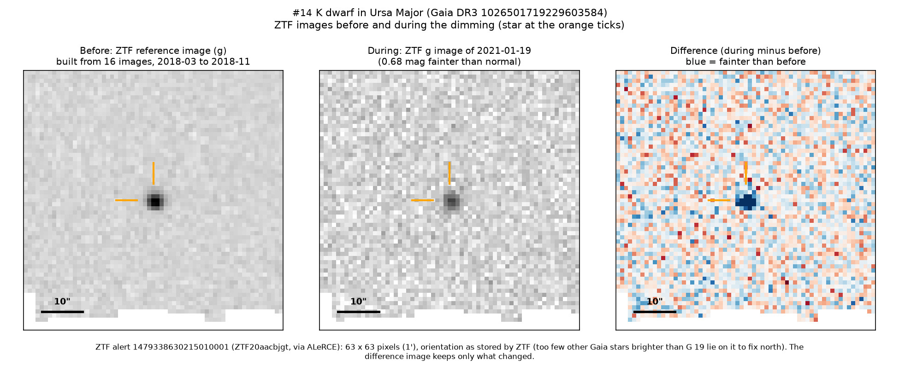
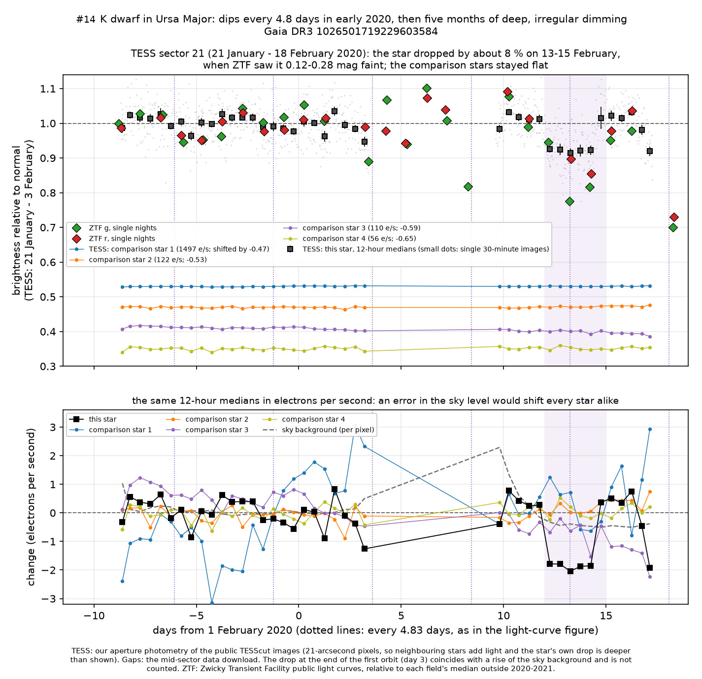

Professor of Mathematics
Paata Ivanisvili
Department of Mathematics, University of California, Irvine

Candidate 25: an orange dwarf that dipped every 4.8 days, then faded for months
Why this estimate. The dimming is certain: ZTF (the Zwicky Transient Facility, a survey telescope at Palomar Observatory in California) recorded it on three detectors while comparison stars stayed steady, and NASA’s TESS space telescope caught one dip. The estimate is not higher because on about two dozen nights the star was also slightly brighter than usual, which passing dust cannot cause, so the star or a companion may vary too; because it is faint, so that only ZTF and TESS recorded the dimming; and because there is no spectrum.
How to read the pictures. The finder chart shows a patch of sky two arcminutes across, about a fifteenth of the Moon’s width, with north up and east to the left. The star sits between the two yellow ticks, and the white bar is 30 arcseconds long. On a light curve the vertical axis is magnitude, a brightness scale on which larger numbers mean fainter stars, and it is drawn so that down means fainter. Purple shading marks the two dimming episodes, and grey shading the months when the star could not be observed. Each survey uses slightly different filters, so each is compared with its own normal level. The ZTF pictures show ZTF’s reference image of the star, an image taken during the dimming, and the difference between the two, in which only what changed remains: blue means fainter and red brighter. The TESS light curve covers the dips of February 2020, together with ZTF’s measurements of the same days.

What changed. The star is an orange (K-type) dwarf, a little smaller and cooler than the Sun, about 2,600 parsecs (8,500 light-years) away. Steady from 2010 to 2019, it dipped slightly in January 2020 and then six times between 4 February and 5 March, about every 4.8 days, each time for one to three nights and by up to 30 per cent in green light. TESS recorded the dip of 13 to 15 February as a drop of about 8 per cent lasting 2.5 days.
After its yearly gap in observations, the star was faint again on 29 September 2020 and stayed so until mid-February 2021, changing by up to 0.6 magnitudes from night to night; on 11 December it had lost 71 per cent of its green light. ZTF’s alert system, which compares each new image with a reference image, recorded 87 good-quality alerts, all fainter than the reference and centred on the star. It dimmed again, slightly, in November 2025.
Why it might matter. Clouds of dust passing in front of the star are the likeliest cause. Green light dimmed 1.37 times as much as red, as through ordinary interstellar dust (1.40), and WISE, NASA’s infrared space telescope, found the star no fainter at 3.4 microns mid-way through the deep episode; together these rule out an opaque body. Material orbiting every 4.8 days would lie about 8 million km from the star, where a compact body would cross it in about two and a half hours; the 2.5-day TESS dip needs material spread along about half the orbit, like a long dust tail.
Starspots change a quiet orange dwarf’s light by only a few per cent, and an eclipse by another star would repeat with the same depth. The star resembles young stars dimmed by clumps in their own discs, but it lies about 1,800 parsecs above the Milky Way’s plane, far from any star-forming region, moves fast and gives off no extra infrared light. Three detectors and a space telescope rule out an instrumental cause. A spectrum would settle the star’s type and age and could reveal a companion.
No record of the dimming could be found. SIMBAD has no entry for the star, Gaia lists no variability, VSX (the variable-star index) has nothing within 30 arcseconds, and the star is in no other variable-star catalogue consulted, nor among the 81 dimming stars of Tzanidakis et al. (2025). No transient report, Gaia alert or paper names it, and ZTF’s alert system holds only machine-generated classifications.
- Star
- Gaia DR3 1026501719229603584, an orange K dwarf
- Location
- RA 144.03137°, Dec +59.16899° (J2000), in Ursa Major, 43.8 degrees north of the Milky Way’s mid-plane
- Distance
- about 2,600 parsecs (8,500 light-years), with a range of 2,000 to 3,400 parsecs
- Brightness
- Gaia G = 17.99, far too faint for the eye or a small telescope
- Probability
- This candidate is unconfirmed. The percentage under the title is an estimate of the chance that it is a real, previously unrecorded case of the kind described. The estimate has not been checked by outside experts. See the introduction to all fifty-eight candidates.
- Caveat
- There is no spectrum, and the star is too faint for ASAS-SN, a worldwide network of small telescopes. Its brightenings of 2019 to 2021, by up to 0.23 magnitudes, are unexplained, and TESS’s large pixels take in light from neighbouring stars, so its 8 per cent depth is a lower limit.


